Wellfed
Making learning to cook fit into everyday life
During a 24-hour designathon, our team was challenged to rethink learning as a continuous practice rather than something with a clear endpoint.
What we worked on as a team
In one day, we moved from rapid research and ideation to wireframes, a working prototype, and final presentation. Together, we created Wellfed: a mobile experience for helping young adults make quick, affordable meals while building cooking confidence.
My contribution
I led the recipe-learning experience—researching familiar short-form patterns, designing the Reels and Details views, and creating the progress navigation that let users skip to the help they needed.
- My role
- UX Designer · Research · Ideation · Wireframing · Prototyping
- Project
- UX Fest SLO · 24-Hour Designathon
- Outcome
- 2026 · Designathon Winner
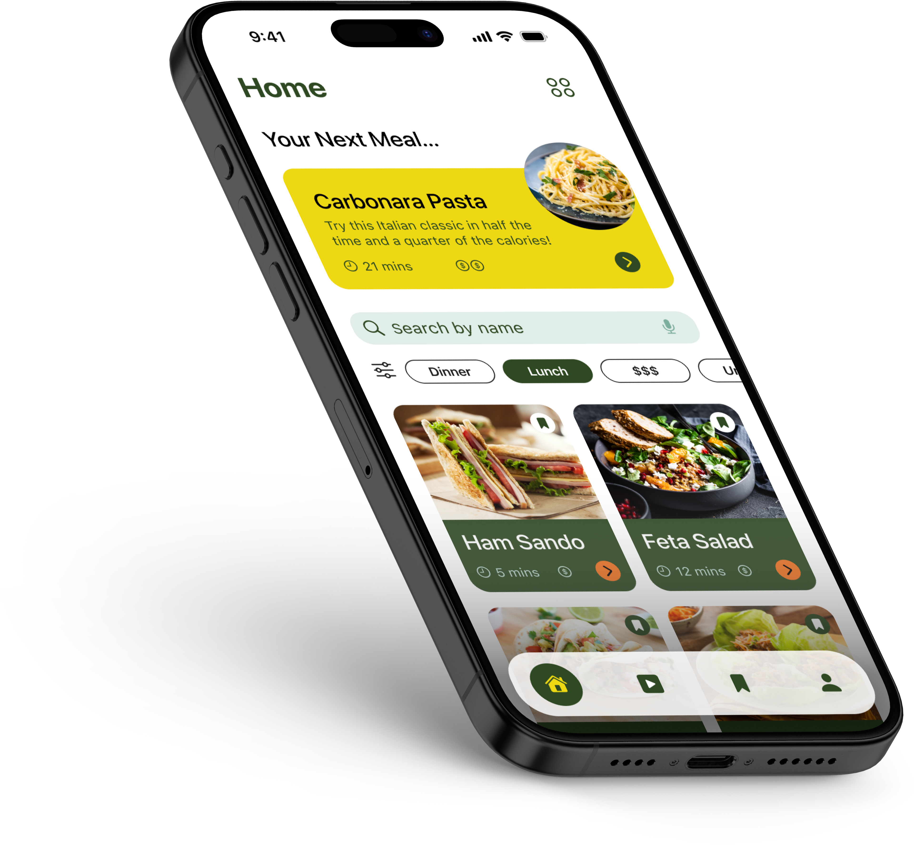
Finding our problem
68 responses in 3 hours
With only 24 hours, we needed to understand our users quickly.
Within three hours, our team collected 68 survey responses to identify what young adults wanted to learn and what was getting in their way.
One opportunity stood out: cooking. Many young adults wanted to prepare fresh, affordable meals but felt held back by limited time, cooking skills, and guidance.
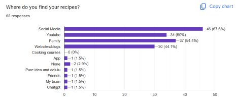
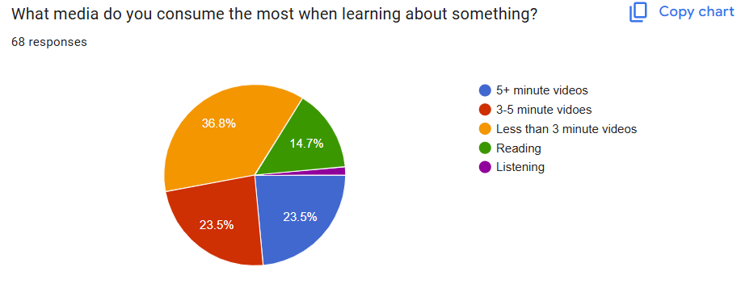
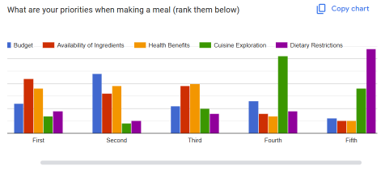
How might we...
How might we make cooking approachable enough to fit into a young adult’s everyday life while helping them continuously build confidence in the kitchen?
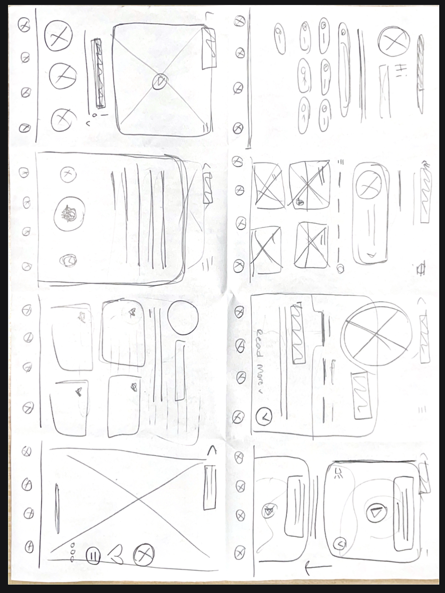
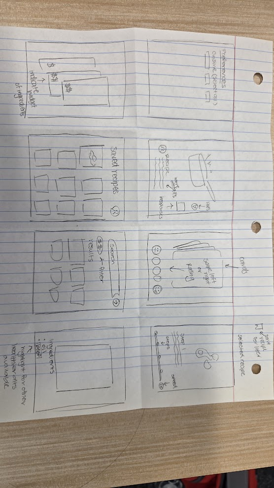
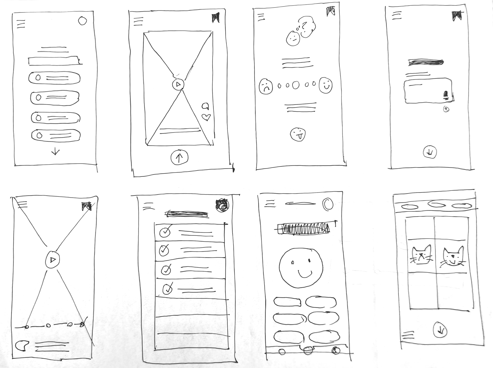
Exploring quickly
From Crazy 8s to a direction
With such a short timeline, we couldn’t explore every possible solution.
We used Crazy 8s to quickly sketch different approaches, compare ideas, and identify which features directly responded to our research.
This helped us prioritize the core experience and move into low-fidelity wireframes quickly.
My focus
What if learning to cook felt more familiar?
My main responsibility was designing the recipe learning experience.
Short-form, vertical content has become a familiar way to quickly discover and learn new things, so I explored how different platforms use this format to make information easier to consume in smaller pieces.
Could learning a recipe feel as easy to start as watching a short video?
Instead of asking users to commit to a long tutorial before they even started cooking, I designed the experience around short, vertical sections that could be followed one step at a time.
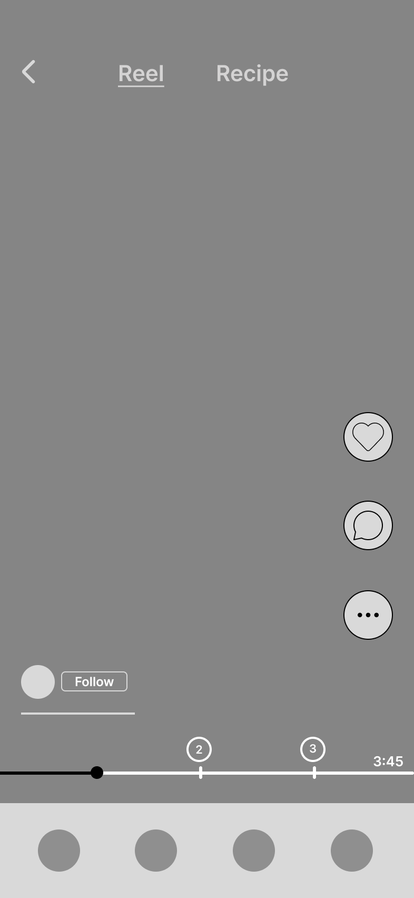
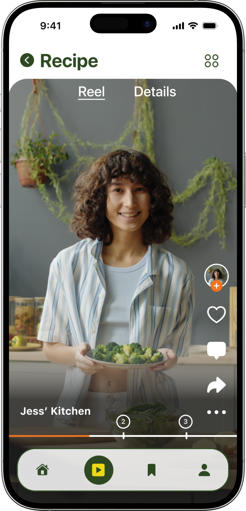
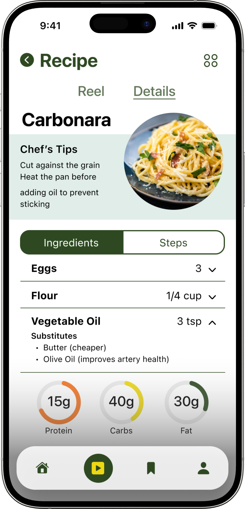
Designing for different ways of learning
Quick when you want it, detailed when you need it
I didn’t want the short-form format to limit users who needed more guidance. So I separated each recipe into two ways of viewing the same information.
Users could move between the two depending on what they needed at that moment. The goal wasn’t to force one way of learning—it was to let users choose how much guidance they needed.
Respecting the user’s time
Already know this step? Skip it.
Not every user needs to learn every step. Someone might already know how to chop an onion but need help with the next technique.
Making them sit through information they already understand would work against one of our biggest research insights: users didn’t have much time.
I introduced a progress bar at the bottom of the recipe experience with markers representing different sections of the recipe.
Users could see where they were, understand what was coming next, and jump directly to the section they needed.
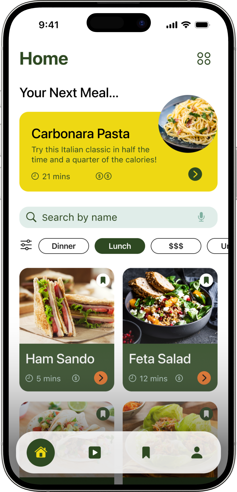
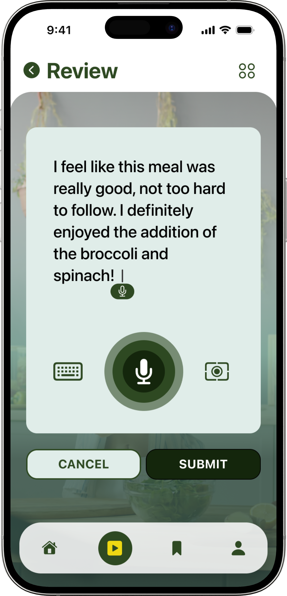
Helping users discover what to cook
Making the feed more relevant
Rather than showing every recipe equally, we envisioned the feed prioritizing content based on signals such as user preferences, cooking interests, and community feedback.
Likes and other feedback could help surface recipes that people found useful, while individual preferences could make the content feel more relevant to what someone actually wanted to cook.
The short-form format wasn’t only a tutorial once users chose a meal—it could also help them discover what they wanted to make.
The final experience
Learning without making learning feel like a task
Wellfed brought these ideas together into an experience designed around learning without making learning feel like another task. Users could discover quick meals, follow recipes visually, switch to detailed instructions when needed, and skip skills they already understood.
Cook something → Learn something → Come back → Build confidence
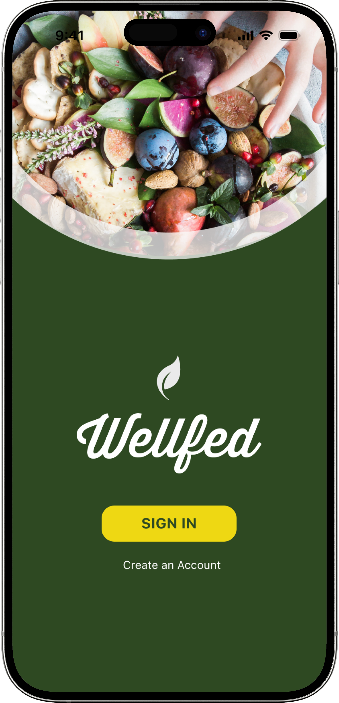
Reflections + learnings
Designing under a 24-hour constraint
The biggest challenge with Wellfed was also what made the project valuable: we only had 24 hours.
There wasn’t enough time to research every possibility or perfect every interaction. I had to learn how to take the information we had, identify what mattered most, and make design decisions quickly.
Someone who already knows three steps of a recipe shouldn’t have to sit through all three again. Someone who wants quick visual guidance shouldn’t be forced to read a long recipe. And someone who needs more information should still be able to find it.
Wellfed became an exercise in designing learning around what the user already knows, how much time they have, and how much guidance they need in that moment.